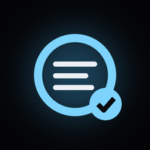

WritoTerms of Use
Last updated November 20, 2026
By using Writo you agree to these terms and to Apple's Standard End User License Agreement: https://www.apple.com/legal/internet-services/itunes/dev/stdeula/
Estimates, not proof
AI detection is a statistical estimate and can be wrong. Do not use a Writo score as the only basis for accusing anyone of using AI or of academic misconduct. Source match searches public academic papers and Wikipedia only. It is not a complete plagiarism check.
Use responsibly
You are responsible for the text you submit and how you use rewrites. Follow the rules of your school, employer or publisher, and do not use Writo to break them.
Service
Features may change, and the service may be limited or unavailable at times. Writo is provided "as is" without warranties to the extent permitted by law.